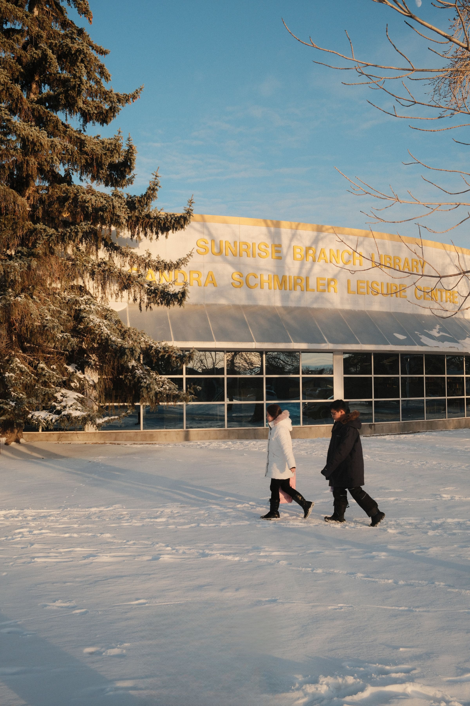
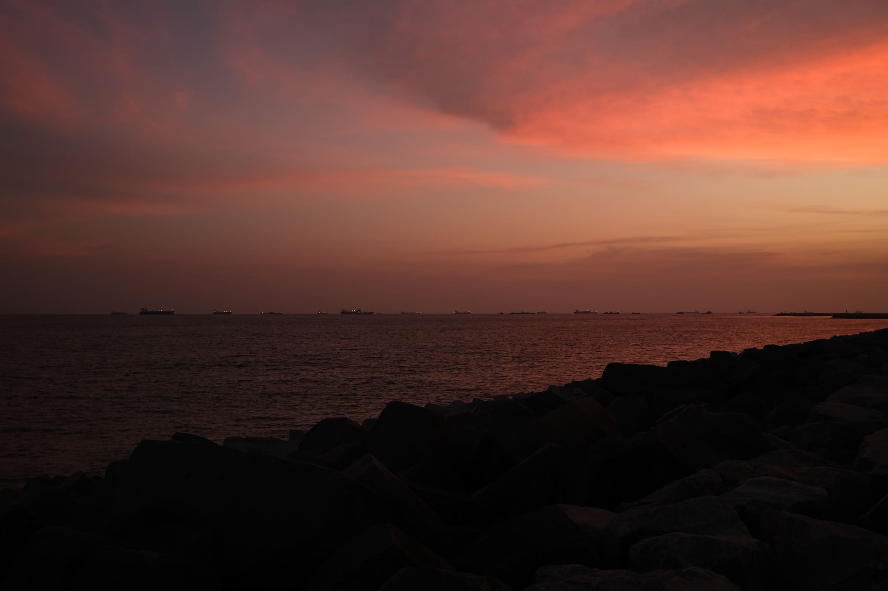
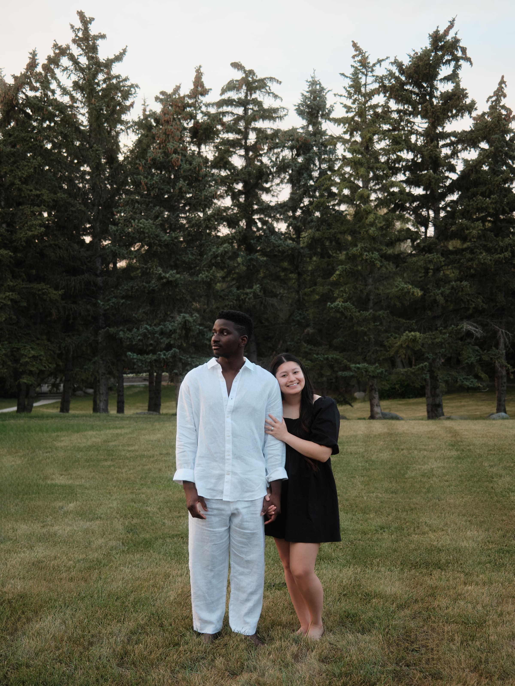

Femi Soetan is a designer. Somewhere between the shutter and the hard drive, most photographs get lost.
This is the small room where the ones worth keeping hang on the wall. Scroll sideways.
Also on Instagram and GitHub.


